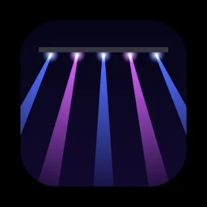

Apps
Small apps, made carefully.
Eric Linder builds apps for the things that pile up in everyday life: habits, bottles, songs, photos, bookmarks and weekly Torah. Each one has its own website, and every one is built to do its job quietly.
Everyday life

Habit Traffic
Gives every routine a green, yellow or red light, so you always know what needs your attention today.
Public betaMiles Ahead of Lease
Log your odometer now and then and see whether you are ahead of your lease allowance, and what an overage would cost.
On the App Store
BarrelBook
The whiskey collection app for serious collectors. Track every bottle, log tastings and manage your wishlist.
On the App StoreYour stuff, in order

Crate Music Library
Your Apple Music library as a room full of records. Ask for playlists in plain words, make mixtapes, see every play.
On the App Store
Quest Chronicle
A game library and play tracker. Connect Steam or Xbox and it logs your sessions while you play.
Public beta
Stash Library
Saves any tab with one key, knows which links you've opened, and archives what you are done with.
Public beta
Thumb Through
Swipe through any folder of photos, one at a time. Keep the good ones, clear out the rest.
Public beta
Snipe
Keeps the apps you mean to buy in one list and tells you when one drops, goes free, or hits your price.
Public betaTorah and music

Torah: Turn It
This week's Torah portion for anyone curious: the story in plain English, a question to talk over, a few minutes a day.
Public betaTorah Tones
Play the melodic phrases of Torah chanting as MIDI, in any key and mode, locked to your host's tempo.
Public beta
Shofar Tones
A real ram's horn recording, five real rooms and a step sequencer, played in time with your music.
Public beta
Hazeshow
Listens to your music and lights a stage for it, live: an arena rig, a jazz club, a concert hall, and paintings and galaxies that grow with the song.
Public betaThe maker
Built in Athens, Georgia
Eric Linder is a rabbi, a lifelong tinkerer, and Emily's husband and partner in Chai Wellness. He makes the apps he wants for his own days, then shares them. Questions, bug reports and ideas are welcome, and each app has its own support page and Discord community.
Eric's sermons, Torah teaching and notes on building apps live at GeekyRabbi.com, under the line "Sacred text, plain text."